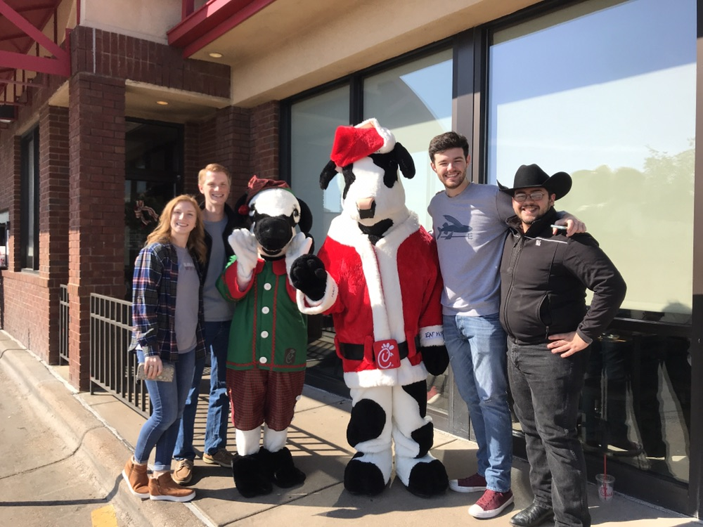
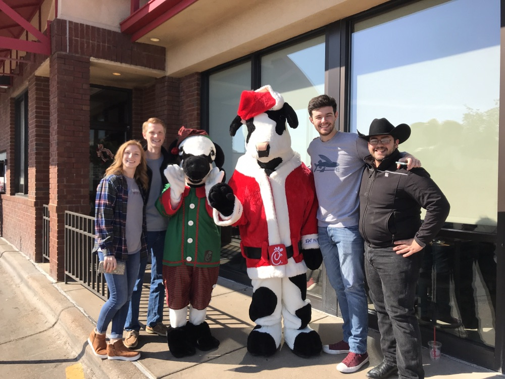

Howdy! My name is Daniel Puckett, and I'm a proud member of the fighting Texas Aggie class of 2021! I attend Texas A&M University, where I am a Junior in Computer Engineering with a minor in mathematics. I grew up with my parents, older sister, and younger brother in the Dallas/Ft. Worth area of Texas. I love programming computers, solving problems, practicing tennis, and playing games!